Milton, Ontario · Canada
Gina Hyunhee Kim
김현희
Certified Logotherapist
Mindful Dialogue Practitioner
NVC Facilitator
Begin Your Journey
Online Course
The Ongo Book 2.0

Milton, Ontario · Canada
김현희


About Gina
I believe counseling is not simply a profession — it is a lifelong calling. Drawing from a profound personal journey of resilience and recovery, I walk alongside my clients as they find their own path toward meaning, self-expression, and inner peace.
Integrating Viktor Frankl's Logotherapy with Marshall Rosenberg's Nonviolent Communication (NVC), I offer a holistic, heart-centered approach that helps individuals break free from negative emotional cycles and build sustainable, meaningful relationships.
“Between stimulus and response there is a space. In that space is our power to choose our response.”
What I Offer
A safe, confidential space to explore your inner world. Together we address depression, anxiety, relationship challenges, and life transitions using Logotherapy and NVC principles to help you rediscover your purpose and strength.
Facilitated group experiences centered on Nonviolent Communication. Participants learn empathetic listening, authentic self-expression, and compassionate conflict resolution through guided practice and reflective exercises.
Specialized support for high-risk individuals navigating severe depression, divorce, grief, and suicidal ideation. My approach combines professional expertise with genuine compassion to guide you toward stability and resilience.
Drawing from Viktor Frankl's foundational work, we explore the unique meaning in your life's experiences — including suffering — to cultivate a profound sense of purpose, freedom, and responsibility.
Sessions available in both English and Korean. For Korean-speaking clients navigating life in Canada, I offer a deeply culturally sensitive space where you can express yourself in your heart language.
Custom NVC and emotional intelligence curriculum design for organizations, churches, schools, and community groups. Bringing evidence-based communication tools to your team or congregation in an accessible, engaging format.
My Approach
“Every person carries within them a seed of meaning waiting to bloom. My role is not to fix, but to illuminate the path so you can find your own way forward.”
— Gina Hyunhee Kim
My Story
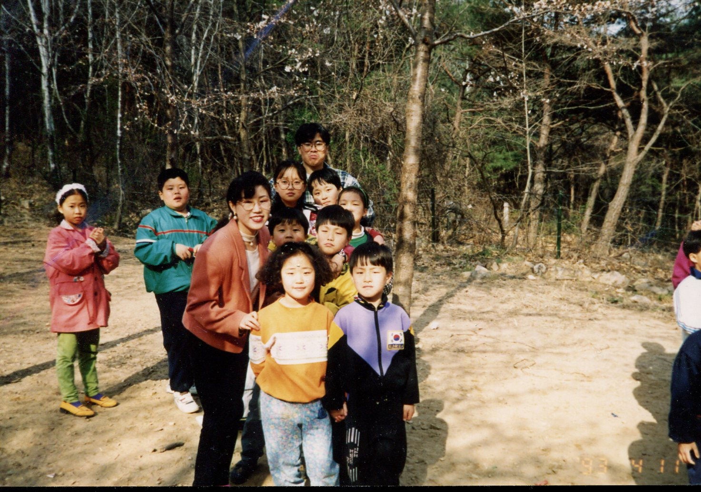
In childhood, quietly listening to a friend's small worries became the first page of a lifelong calling. A warm word from an elder — “thank you for listening to me” — stayed with me ever since, and listening to others slowly grew into both a habit and a longing within me.
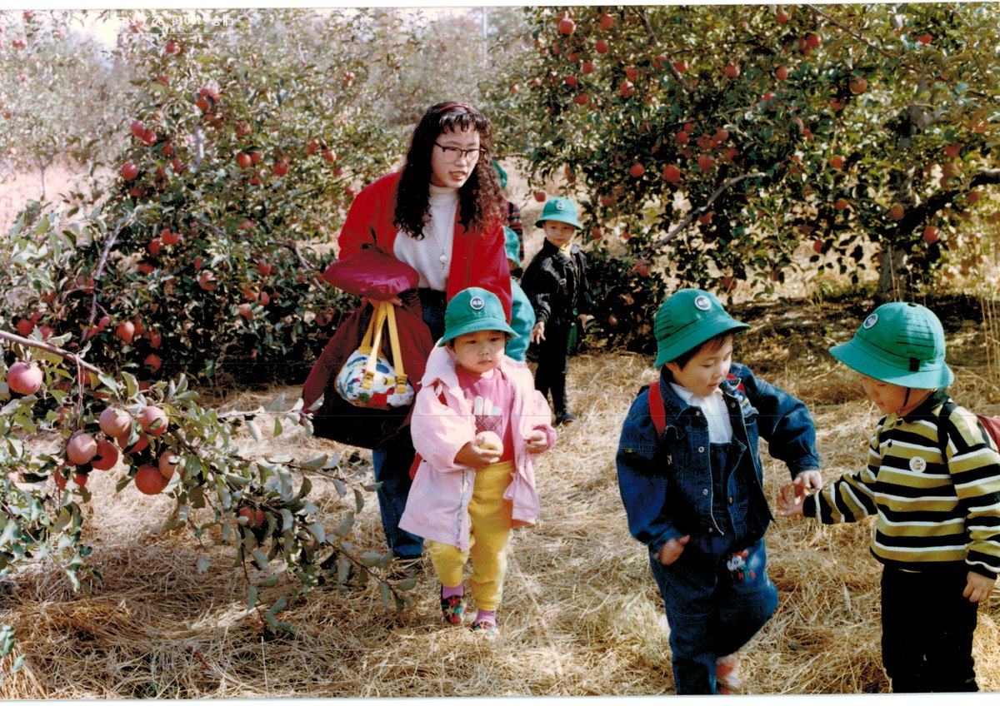
I took my first steps into society as a kindergarten teacher, beginning a journey of meeting and nurturing young children.
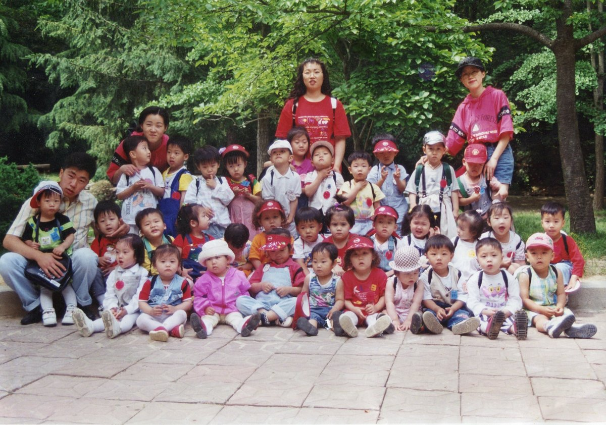
As director of a childcare center, I began a new chapter — counseling parents, meeting fellow education leaders, and shaping a vision for early education while learning the fundamentals of running an institution.
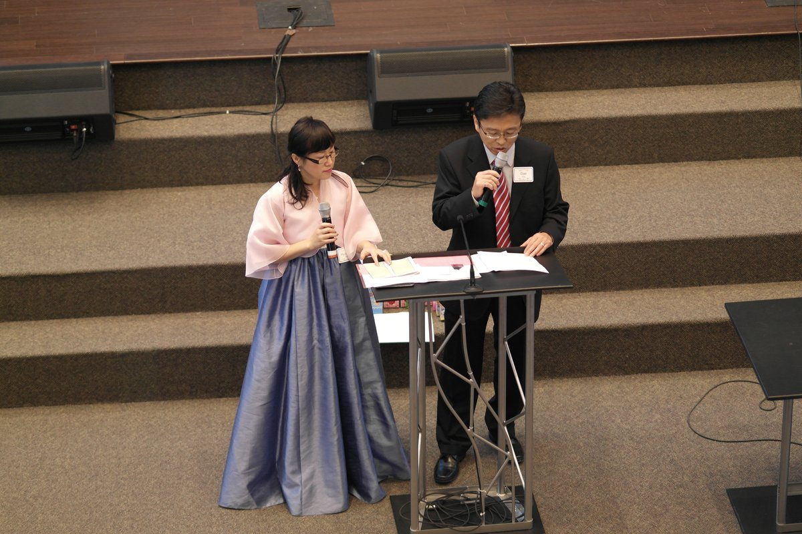
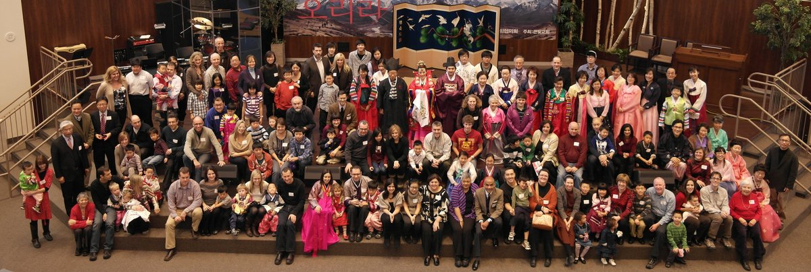
After marriage, I relocated to Canada and began a life of service — running a Korean language school and leading within my church community. I helped Canadian-born children of Korean heritage rediscover their roots, while guiding a community of faith.
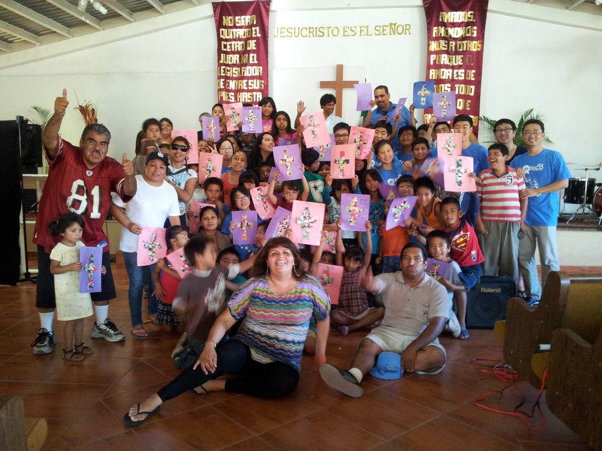
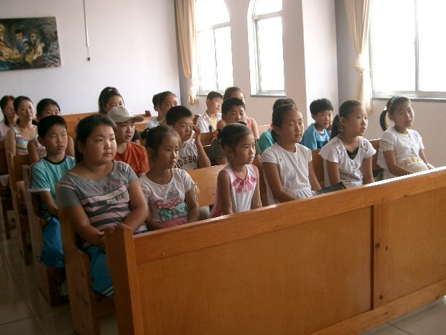
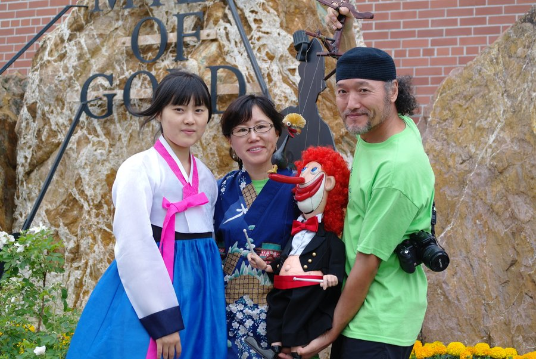
Short-term mission work carried me from China to Germany, Mexico, and Indigenous communities across Canada. Languages and cultures differed, but listening to people's stories and offering comfort felt as natural — and as joyful — as breathing.
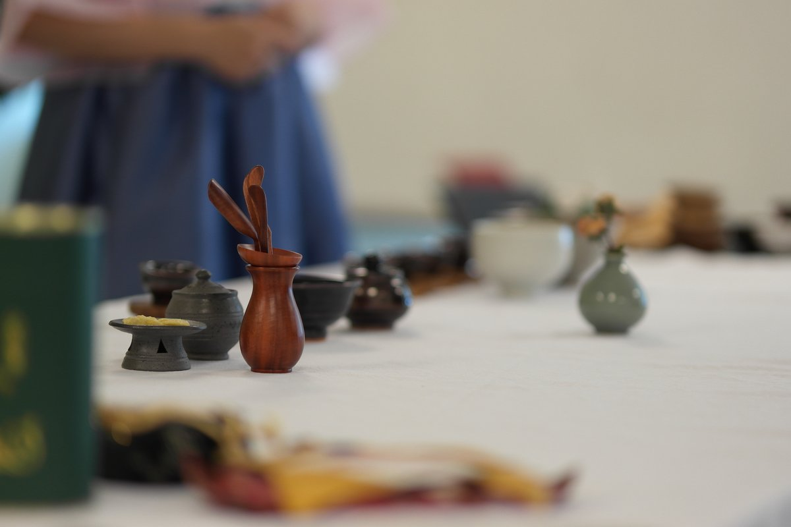
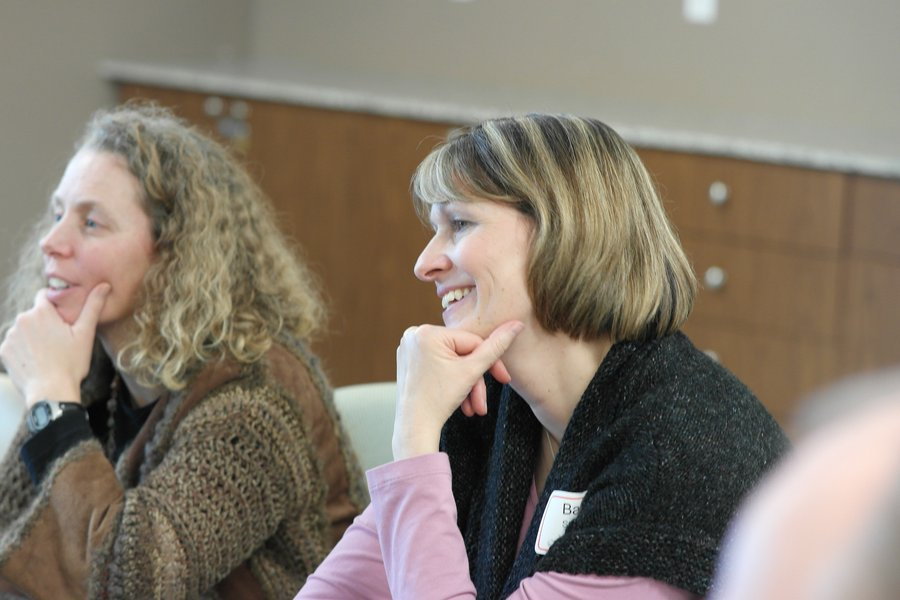
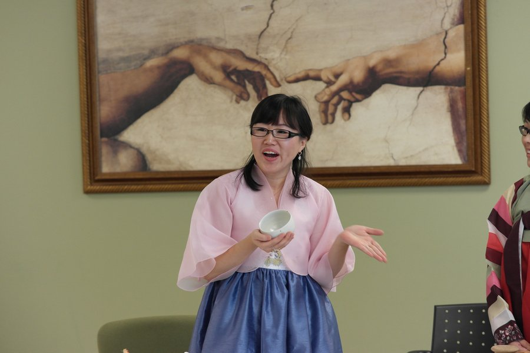
I had the privilege of introducing traditional Korean tea culture to Korean children adopted into Canadian families — a journey born from deep empathy with adoptive parents who wished their children would never forget the beauty of their birth heritage. Watching the children discover their identity in the fragrance of tea remains an unforgettable grace.
A sudden car accident — severe enough to require emergency helicopter transport — brought everything to a halt. Treatment then revealed thyroid cancer that had spread to the lymph nodes, leading to surgery and a long battle with illness. The limits of my body forced me to set aside the work I had so passionately carried.
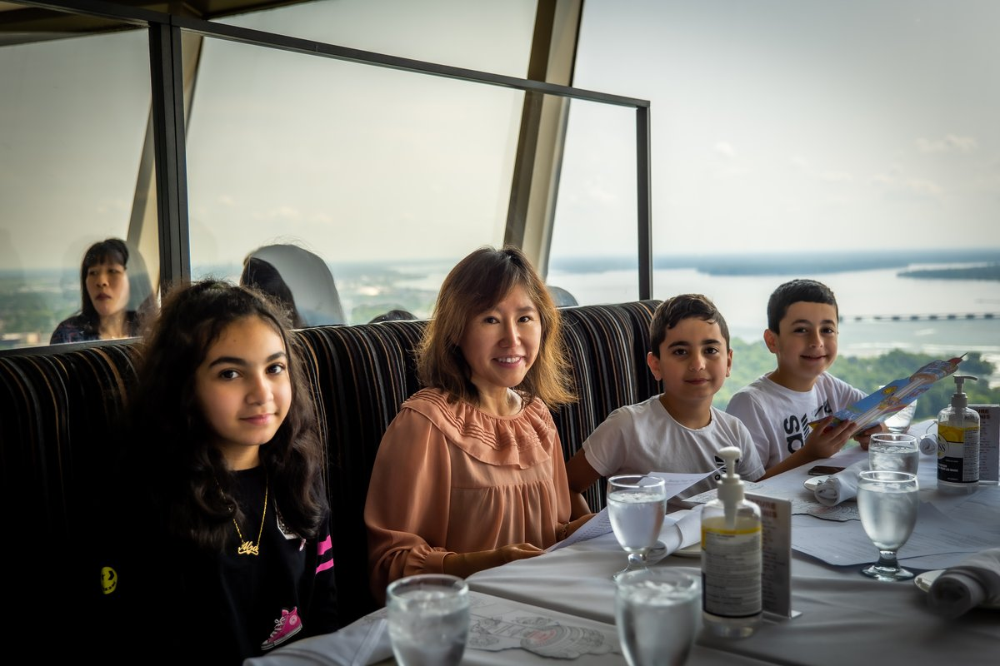
In the depths of that difficult season, I was given the chance to care for a Syrian refugee family who had arrived with only a few bags. Joining a team supporting their resettlement, I walked alongside them for years — and felt my own inner joy and vitality return. In caring for others through my own pain, I found my own healing.
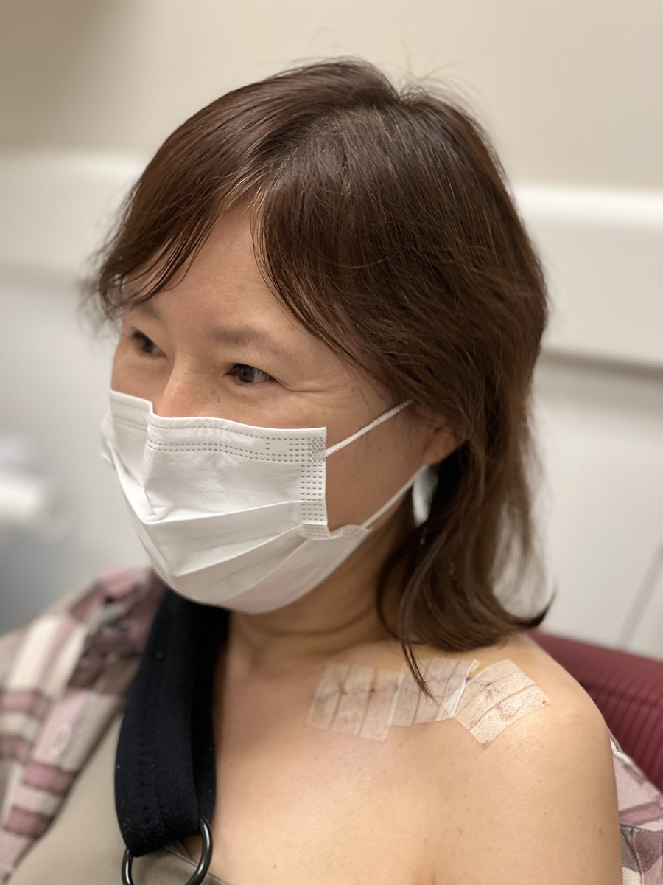
Ten years after the accident, I finally underwent surgery to replace my shattered shoulder with titanium — a procedure long delayed until my body's balance allowed it. With that lingering pain finally released, I began preparing, body and spirit stronger than ever, for a new leap forward.
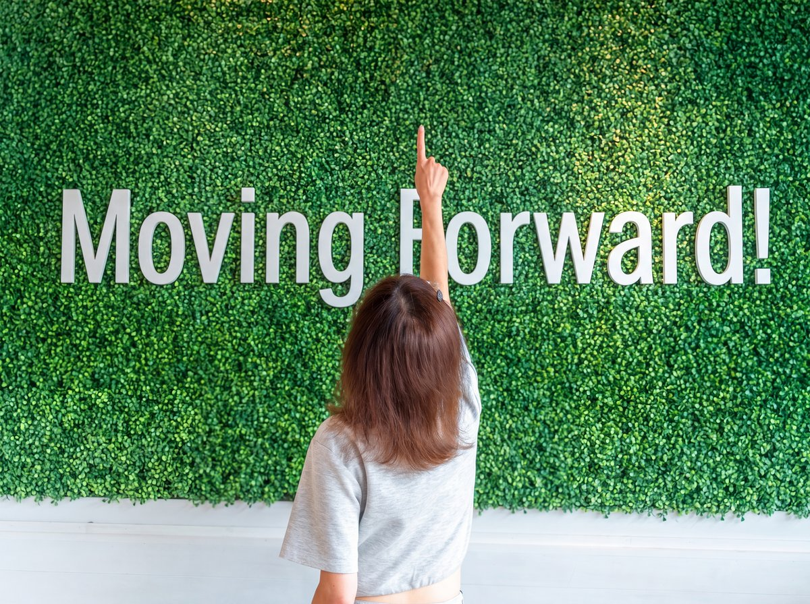
Every step of this journey has been a stepping stone toward deeper empathy and a truer understanding of connection. Today, I carry that lifelong habit of listening into the discipline of Nonviolent Communication — opening spaces where conflict becomes understanding, and wounds become healing.
Get in Touch
Reaching out takes courage. Whether you have questions or are ready to begin, I welcome your message with warmth and without judgment.